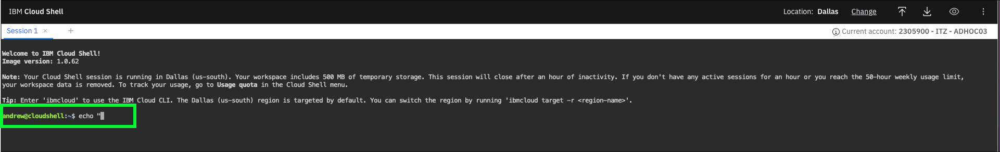
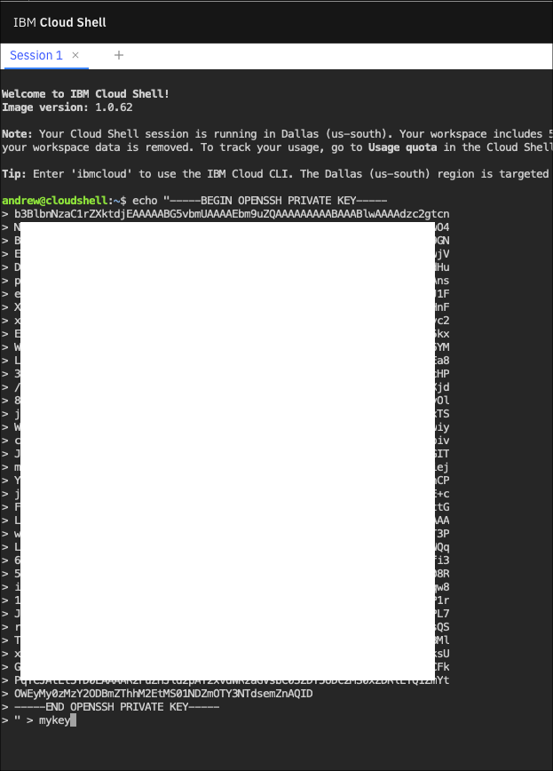
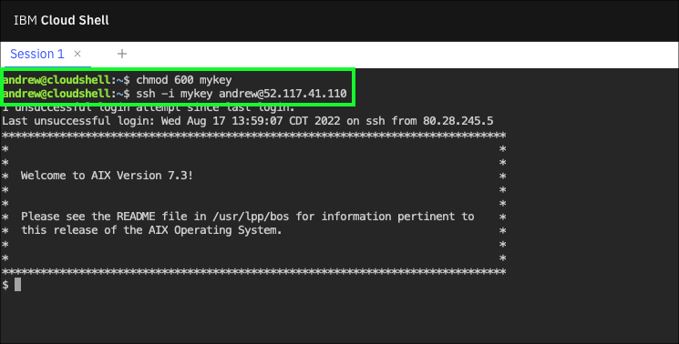

Access an instance
Accessing a PowerVS instance will depending on several factors, including the operating system the instance is running and the network connectivity available. Remote login tools like Secure Socket Shell (SSH), telnet, and other terminal emulators can be used to access instances. PowerVS also provides access to running instances using a web-based console tool. In most cases, clients will deploy PowerVS instances using a secured network like Direct Link or Virtual Private Network (VPN). Learn more about the PowerVS network connectivity options here.
For this exercise, the IBM Cloud Shell will be used so no additional software is required. IBM Cloud Shell gives users complete control of their cloud resources, applications and infrastructure, from any web browser. IBM Cloud Shell provides pre-authenticated access to the latest tools and programming languages for cloud-based development, deployment and management of services and applications — all in a secure shell. IBM Cloud Shell is instantly accessible from the IBM Cloud portal.
To quickly demonstrate the value of PowerVS, this demonstration environment and all running instances are provisioned with a public, Internet facing network interface.
Follow the steps below to log in to a running PowerVS instance using the IBM Cloud Shell and SSH. You can learn more about SSH and SSH keys here.
Important
To complete this exercise, you will need the user identification (ID) and the SSH private key provided in your IBM Technology Zone reservation welcome letter. This information is also available on the IBM Technology Zone website under the My Library and My Reservations menu.
- If not already opened, open the IBM Cloud Portal: https://cloud.ibm.com/ and authenticate with your IBM Cloud credentials.
- Change from your IBM Cloud account to the 2305900 - ITZ - ADHOC03 account.

Tip
If your browser window is narrow, you may see this icon:  instead of the current account name as shown in the screen capture above.
instead of the current account name as shown in the screen capture above.
- Click the IBM Cloud Shell icon
 .
.

The next steps are performed in using the IBM Cloud Shell window that was opened. First, you need to create a SSH private key file using the key provided in your IBM Technology Zone's reservation welcome e-mail.
Remember, to avoid typographical errors copy the command line using the  icon when it is available. Then paste the contents into the IBM Cloud Shell using Ctrl+v, Cmd+v, or right click and select paste at the prompt in the IBM Cloud Shell.
icon when it is available. Then paste the contents into the IBM Cloud Shell using Ctrl+v, Cmd+v, or right click and select paste at the prompt in the IBM Cloud Shell.
- Copy your public key from the TechZone welcome e-mail or from the reservation information on the TechZone web site. Use your operating system's copy to clipboard capabilities (e.g. highlight the text starting with ssh-rsa to the end of the key and then use Ctrl+c or Cmd+c.)
NEED IMAGE HERE!!!!!!!!!!
- In the IBM Cloud Shell window, enter the following string, but do not hit enter.
echo "

-
Paste your public key into the IBM Cloud Shell window using either Ctrl+v or Cmd+v.
-
In the IBM Cloud Shell window, after the text you just pasted, enter the following and press enter.

- To verify, run the following command in the IBM Cloud Shell.
The output of the above command should be the same as the private key in your TechZone welcome letter and reservation details.
- Change the access permissions of the key file.
Note, this is required to allow the next commands to work properly. There is not output when this command is executed.
- Using the value of the UserName field found in your TechZone reservation, use ssh to log into the AIX-vm-1 instance. You must substitute your UserName in place of the string UserName in the command below:
ssh -i mykey **UserName**@52.117.41.110

- Try running a few OS level commands:
All of these commands are basic OS commands. If you are familiar with AIX or Linux, feel free to try other things out on the instance. Note, your user ID has limited permissions on all PowerVS instances in this shared environment. Administrative access is not provided.
- Close the SSH connection by running the exit command.
To explore further, use the following public IP addresses to access the other PowerVM instances:
| Instance name | Instance public IP address |
|---|---|
| AIX-vm-1 | 52.117.41.110 |
| AIX-vm-2 | 52.117.41.106 |
| RH-vm-1 | 52.117.41.107 |
| RH-vm-2 | 52.117.41.108 |
Use the ssh -i mykey UserName@IPaddress command to connect to the other servers. Be sure to replace UserName with the UserName field found in your TechZone reservation, and IPaddress with the instance's public IP address from the table above.
That concludes the required Parts of the demonstration script for IBM and Business Partners Sales. You are encouraged to complete Parts 6 and 7, but at this time you may skip to Part 8 - Next steps.
Technical sellers proceed to the next Part and explore PowerVS server placement groups.
combined.pdf